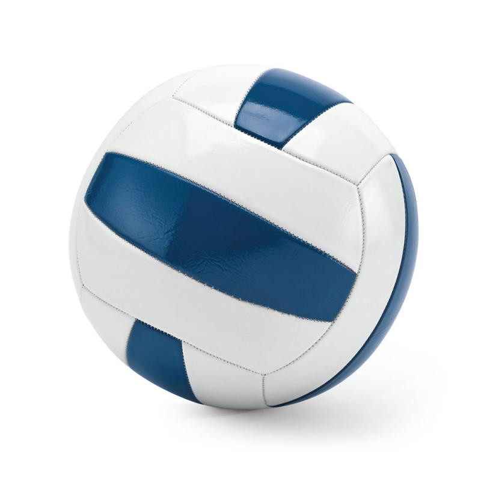

Actualizado el 8 de diciembre
Sirve para estilizar con CSS una palabra o un conjunto de palabras. Se hace poniendo la etiqueta "span" y una id.
Por ejemplo, he puesto el fondo en color azul, mediante la etiqueta "span".
Sirve para estilizar con CSS un conjunto de palabras más amplio que las de la etiqueta "span" o distintos párrafos.
Sirve para ajustar un texto que tiene unas dimensiones muy grandes, a un espacio concreto, ya que si tiene unas dimensiones muy grandes se puede solapar con otros textos que tengamos. Para que no pase esto se pueden añadir unas barras, estas pueden ser horizontales y verticales, y pudeden añadirse las dos o sólo una.
Para ello se utiliza la etiqueta "overflow"
El siguiente ejemplo, muestra una noticia sobre el covid. Y le he puesto un margen con un grosor de 10 píxeles, el overflow está en automático, Tienen un padding (que es el espacio con el margen).
La Comisión Europea propone la suspensión de los vuelos con los países del sur de África por la aparición de una nueva variante.
La Comisión Europea, Ursula von der Leyen, ha adelantado esta mañana que propondrá a los países de la Unión Europea la suspensión de las conexiones aéreas con la región del sur de África ante la aparición de una nueva variante del coronavirus. La Organización Mundial de la Salud (OMS) se reúne hoy para estudiarla a partir de las 12.00. Descubierta en Sudáfrica, pero también detectada en Botsuana, Hong Kong e Israel, la variante cuenta con una treintena de mutaciones y es denominada como B.1.1.529. Los científicos analizan si es más transmisible o letal que las anteriores y si supone un problema para la efectividad de las vacunas. Hasta ahora, Reino Unido, Alemania, Italia, Israel y Singapur ya han cancelado los vuelos con varios países africanos como Sudáfrica, Namibia, Lesoto, Suazilandia, Zimbabue y Botsuana. Este viernes, Alemania ha vuelto a registrar un récord de contagios, 76.414 en el último día, y de la incidencia acumulada a siete días, con 438,2 positivos en la última semana por cada 100.000 habitantes, según los datos facilitados por el Instituto Robert Koch. Además, 357 personas han muerto por culpa de la covid-19 en las últimas 24 horas. En la República Checa, las autoridades también han registrado un nuevo máximo de positivos en un día, con 27.717 notificados. En España, el Ministerio de Sanidad notificó el jueves 9.258 nuevos contagios y sumó 27 fallecidos al recuento oficial. La incidencia acumulada sube 11 puntos hasta los 160 casos por 100.000 habitantes en los últimos 14 días.
Las Bolsas se desploman por el temor a la nueva variante de la covid.
El Ibex 35 ha iniciado la sesión de este viernes con una caída del 3,8%, lo que ha llevado al selectivo a situarse en los 8.497,62 enteros a las 9.01, ante los temores de los inversores por la nueva variante de la covid-19 detectada en Sudáfrica y en un contexto de nuevas restricciones en Europa para hacer frente a la pandemia.Siguiendo la estela de las Bolsas asiáticas, el inicio de la sesión en los mercados europeos ha sido en rojo, en un escenario en el que la persistencia de la pandemia y la nueva variante de la covid-19 están deteriorando el sentimiento de los inversores.De esta forma, tras cerrar ayer con una alza del 0,56%, el selectivo madrileño se situaba por debajo de la cota psicológica de los 8.500 enteros, mientras que el resto de Bolsas europeas cotizaban también con pérdidas superiores al 3% en el caso de Fráncfort, Londres y París. (Efe)
El modelo de caja es un módulo de CSS que marca unas medidas para los elementos de la página web:
Estas propiedades están explicadas en el siguiente enlace: Posiciones CSS
La propiedad float, sirve para decirle al navegador, donde quieres colocar los diferentes elementos. Se hace poniendo dentro de style "float", seguido de dos puntos y de la posición deseada.
Por ejemplo,la imagen de la pelota, está situada en la parte izquierda de la página web, y el texto a la derecha.
La propiedad clear, se usa cuando no queremos que un elemento, se sitúe al lado de otro, que tiene la propiedad "float".

Balón de vóleibol:
El balón es esférico y flexible; 65-67 cm de circunferencia, 260-280 g de peso y presión interior de 0,3-0,325 kg/cm².
Es así más pequeño y ligero que los balones empleados en baloncesto o fútbol.
Puede estar hecho de varios materiales aunque el más cómodo y utilizado es el de cuero.
Este texto está separado de la foto, garacias a la propiedad clear.